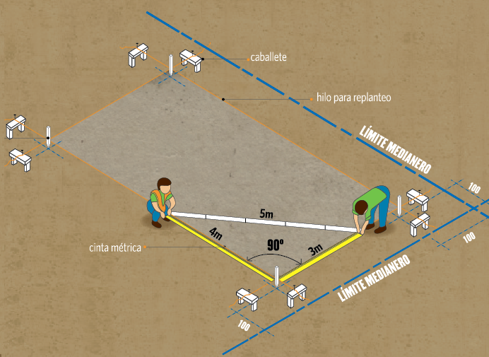

Cuando queremos calcular el área de un terreno rectangular, multiplicamos uno de sus lados por otro de sus lados contíguos. Como la unidad de medida es el metro, el producto de metro por metro nos dá como resultado metro por metro o, lo que es lo mismo, metro al cuadrado.

Escala para medir Intensidad de Corriente Contínua
Supongamos que nos quieren vender un terreno de 300 metros cuadrandos (en adelante m2). Sabemos el área del terreno pero no conocemos sus dimensiones, o sea que puede ser un terreno de 10 metros por 30 metros o de 12 metros por 25 metros.
Aunque no sepamos las dimensiones del terreno, sabemos que el producto de sus lados da 300 metro por metro.
Diagrama Intensidad - Tiempo
Práctica
Ser realizarán conversiones de unidades, múltriplos y submúltiplos. La frecuencia de esta operación ocasionará que las conversiones se hagan mentalmente, sin la necesidad de recurrir a lápiz y papel.
Se identificacarán las escalas de medición de los instrumentos que se encuentran en submúltiplos de Amper y se realizará la conversión a Amper.
Evaluación
Aunque la evaluación es contínua, este tema tendrá una instancia de evaluación escrita.
Cuestionario de la Evaluación
¿A cuántos Amperes equivale un KiloAmper?
¿A cuántos Amperes equivalen mil miliamperes?
¿A cuántos miliAmperes equivalen mil microAmperes?
¿A cuántos Amperes equivalen mil microAmperes?
¿A cuántos Amperes equivalen un millón de miliamperes?